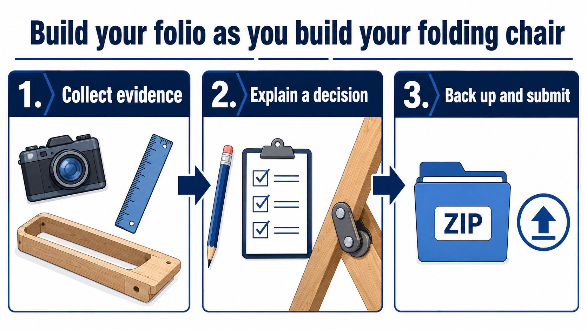

Evidence first
Show the decisions, process and result
A strong folio is not perfect-sounding waffle. It shows what you planned, the evidence you collected, what went wrong, what you changed and what the finished chair proves.
- 1. CollectTake a useful photo, sketch or note.
- 2. ExplainSay what it proves and why it matters.
- 3. Back upDownload your ZIP before changing devices.

Your session
Student details and saving
Ready. Autosave is on.
0 of 12 evidence cards completeAdd a response and evidence note to complete a card.
When your teacher asks
Submit your evidence
Download your ZIP backup. It includes your answers and attached photos. Upload that one ZIP file to the Folding Chair Project Folio submission in Google Classroom.
ZIP
answers + photos
answers + photos